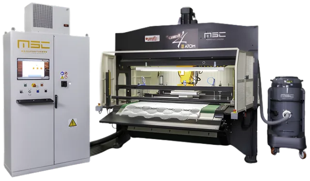
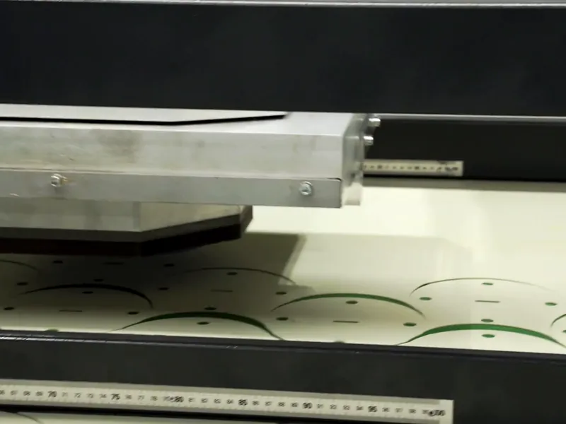

Home / Machines / Die cutting presses
Die cutting presses, from the clicker to the CNC traveling head
From the traditional ATOM clicker press to the Chiesa CNC traveling head press with servo-driven EDI technology and the PIT STOP automatic tool changer.
ATOM, Chiesa and RFS Co.Mec

Five kinds of press
ATOM and Chiesa, both from Vigevano, Italy, joined forces in 2012 to offer one complete range of die cutting presses.
Clicker presses
ATOM swing arm, SE series, S100 series
The most widely used die cutting machines in the world. ATOM has more than 70 years of experience building them.
Platen presses
RFS Co.Mec platen, plating and hot stamping presses
Small footprint with high cutting power, including heated cutting presses for automotive sound-dampening materials.
Manual traveling heads
ATOM 588 CE
A wide, easy-to-reach working area for small to medium dies: gaskets, textiles, rubber, foam and composites, in rolls or sheets. Cutting power adjusts automatically.
Beam presses
ATOM S300, S600 ST, S600 BP and Chiesa RH series
The beam does not travel, so the cycle is quicker, and dies can be as large as the cutting surface. Enough power to cut multiple parts and plies in one stroke.
CNC traveling heads
Chiesa F1 EDI
Cutting robots with two or three controlled axes and nesting software. The servo-driven head has no hydraulics.
The press without hydraulics
Chiesa built the first belt-fed die cutting press in the late 1980s and patented the electrically driven CNC automatic cutting press in 2006. On the F1 EDI the servo-driven head removes the maintenance that hydraulic parts need and improves accuracy and repeatability.
Power consumption: up to 50% lower
- ATOM, established1958
- ATOM oil-dynamic clicker presses in production250,000+
- Chiesa, building presses in Vigevano50+ years
- Chiesa electric CNC press patent2006
Where these presses work
MSC matches the press to the job, whether a plant needs maximum throughput of finished parts or a special application with complex requirements.

Which press fits your parts?
Send MSC the material, the part size and the volume. They will point you to a clicker, beam, platen or CNC press.